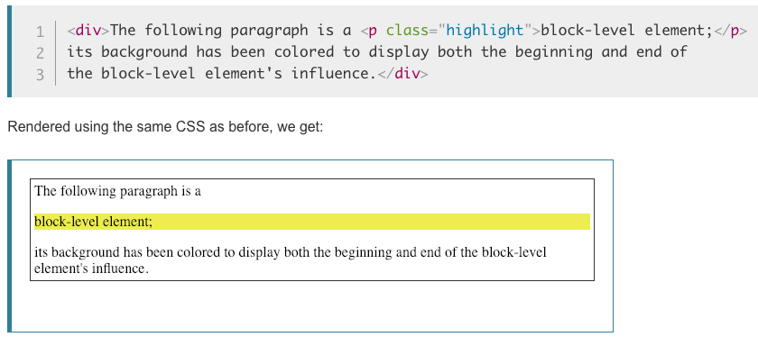
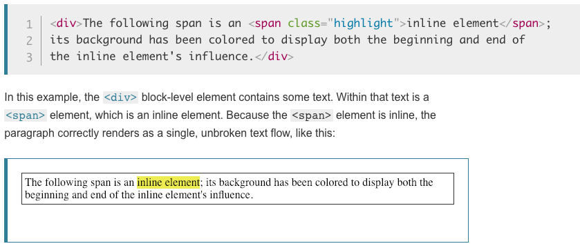
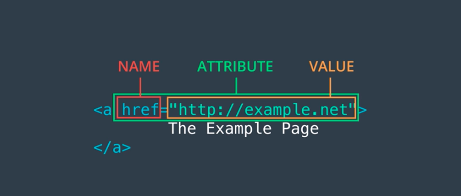

The user (me) will interact with a web browser by typing in a specific web page address into a browser.
The Web browser is an application, like Chrome, Firefox, Edge, or Safari, that is designed for displaying web pages. Web pages are usually stored on servers. Usually, to load a web page, your browser sends a request for that page to a server. Browser gets web pages by communicating with servers over the Internet and interprets them to the user.
The Internet (Web) is collection of documents written in HTML (HyperText Markup Language), along with other resources such as images and videos, as well as programs and services that interact with these documents and resources. Those resources are spread out among millions of computer systems. The Web is a hypertext system which is a form of text in which documents can refer (hyperlink or just link) to other documents and resources. Users can follow those references (links) to find related information spread out over the Web. Both documents and other data objects (images, videos, fonts, program code, etc...).
HTTP means HyperText Transfer Protocol. HTTP is the underlying protocol used by the World Wide Web and this protocol defines how messages are formatted and transmitted, and what actions Web servers and browsers should take in response to various commands.
Internet servers are just computers, but they have programs running on them that answer a browser's requests. It makes a request to the server for a particular document by name. the server sends a response back to the browser containing that document, or and error message instead.
When you type udacity.com into your browser, your browser communicates with Udacity's server using HTTP (or HTTPs). Udacity's Web server returns an HTML file to your browser. Based on information contained in the HTML, your browser requests other files from Udacity's web server and from other web servers. When developing your own web page, simply save the file on your computer and then load it in the browser. When ready, put the files on a web server so everyone can access it.
HTML is the main type of document on the web that binds the Internet together. This document contains:
Markup syntax is just text that has a special meaning that involves tags. Those HTML tags are element names surrounded by angle brackets. Developers often say element when they mean tag, and visa versa. The following are some examples (without brackets):
Block-level elements - The link leads to a complete list of all HTML "block-level" elements (although "block-level" is not technically defined for elements that are new in HTML5). A block-level element always starts on a new line and takes up the full width available (stretches out to the left and right as far as it can). It's basically an invisible big box with padding surrounding it. The following illustrates a block-level element:
Inline-level elements - The link is a complete list of all elements that are inline by default (although block and inline elements are no longer defined in HTML 5, use content categories instead). An inline element does not start on a new line and only takes up as much width as necessary. The following illustrates an inline-level element:
URL - Uniform Resource Locator
<a href="https://github.com/">GitHub</a>
The following is an example of the main anchor components:
Image - The image tag includes src and alt attributes , but no closing tag.
NOTE:The URL of an image may be an absolute URL, such as http://placebear.com/800/600,
or it may be a relative URL such as images/wolves.jpg.
Link: Click For Picture!
<img src="https://fakeurl.example.net/fish.png" alt="Fish">
<a href="http://placebear.com/800/600"
target="_blank">Click For Picture!</a>
The !DOCTYPE html tag at the top of your file indicates the type of each modern web document.
The other part of an HTML document includes the head and body. The following link helps explain those key components:
Link: HTML Structure Explained
Link: W3 HTML Validator Link
The "two key" tools utilized in this lesson were:
| ID | Element | Description | Web Link |
|---|---|---|---|
| 1 | a | The HTML anchor element creates a hyperlink to other web pages, files, locations within the same page, email addresses, or any other URL. | anchor_link |
| 2 | b | The HTML Bring Attention To element bold is used to draw the reader's attention to the element's contents, which are not otherwise granted special importance. This was formerly known as the Boldface element, and most browsers still draw the text in boldface. | bold_link |
| 3 | body | The HTML body Element represents the content of an HTML document. There can be only one body element in a document. | body_link |
| 4 | br | The HTML br element produces a line break in text (carriage-return). It is useful for writing a poem or an address, where the division of lines is significant. | break_link |
| 5 | div | The HTML Content Division element (div) is the generic container for flow content. It has no effect on the content or layout until styled using CSS. | div_link |
| 6 | em | The HTML em element marks text that has stress emphasis. The em element can be nested, with each level of nesting indicating a greater degree of emphasis. | em_link |
| 7 | h1 - h6 | The HTML h1-h6 elements represent six levels of section headings.h1 is the highest section level and h6 is the lowest. | headings_link |
| 8 | head | The HTML head element provides general information (metadata) about the document, including its title and links to its scripts and style sheets. | head_link |
| 9 | hr | The HTML hr element represents a thematic break between paragraph-level elements: for example, a change of scene in a story, or a shift of topic within a section. | hr_link |
| 10 | html | The HTML html element represents the root (top-level element) of an HTML document, so it is also referred to as the root element. All other elements must be descendants of this element. | html_link |
| 11 | i | The HTML i element represents a range of text that is set off from the normal text for some reason. Some examples include technical terms, foreign language phrases, or fictional character thoughts. It is typically displayed in italic type. | i_link |
| 12 | img | The HTML img element embeds an image into the document. | img_link |
| 13 | li | The HTML li element is used to represent an item in a list. It must be contained in a parent element: an ordered list (ol), an unordered list (ul), or a menu (menu). In menus and unordered lists, list items are usually displayed using bullet points. In ordered lists, they are usually displayed with an ascending counter on the left, such as a number or letter. | li_link |
| 14 | link | The HTML External Resource Link element (link) specifies relationships between the current document and an external resource. This element is most commonly used to link to stylesheets, but is also used to establish site icons (both "favicon" style icons and mobile home screen/app icons) among other things. | link_link |
| 15 | mark | The HTML Mark Text element (mark) represents text which is marked or highlighted for reference or notation purposes, due to the marked passage's relevance or importance in the enclosing context. | mark_link |
| 16 | meta | The HTML meta element represents metadata that cannot be represented by other HTML meta-related elements, like base, link, script, style or title. | meta_link |
| 17 | ol | The HTML ol element represents an ordered list of items, typically rendered as a numbered list. | ol_link |
| 18 | p | The HTML p element represents a paragraph. Paragraphs are usually represented in visual media as blocks of text separated from adjacent blocks by blank lines and/or first-line indentation, but HTML paragraphs can be any structural grouping of related content, such as images or form fields. | p_link |
| 19 | pre | The HTML pre element represents preformatted text which is to be presented exactly as written in the HTML file. The text is typically rendered using a non-proportional ("monospace") font. Whitespace inside this element is displayed as written. | pre_link |
| 20 | script | The HTML script element is used to embed or reference executable code; this is typically used to embed or refer to JavaScript code. The script element can also be used with other languages, such as WebGL's GLSL shader programming language. | script_link |
| 21 | span | The HTML span element is a generic inline container for phrasing content, which does not inherently represent anything. It can be used to group elements for styling purposes (using the class or id attributes), or because they share attribute values, such as lang. It should be used only when no other semantic element is appropriate. span is very much like a div element, but div is a block-level element whereas a span is an inline element. | span_link |
| 22 | strong | The HTML Strong Importance Element (strong) indicates that its contents have strong importance, seriousness, or urgency. Browsers typically render the contents in bold type. | strong_link |
| 23 | style | The HTML style element contains style information for a document, or part of a document. It contains CSS, which is applied to the contents of the document containing the style element. | style_link |
| 24 | sub | The HTML Subscript element (sub) specifies inline text which should be displayed as subscript for solely typographical reasons. Subscripts are typically rendered with a lowered baseline using smaller text. | sub_link |
| 25 | sup | The HTML Superscript element (sup) specifies inline text which is to be displayed as superscript for solely typographical reasons. Superscripts are usually rendered with a raised baseline using smaller text. | sup_link |
| 26 | table | The HTML table element represents tabular data — that is, information presented in a two-dimensional table comprised of rows and columns of cells containing data. | table_link |
| 27 | tbody | The HTML Table Body element (tbody) encapsulates a set of table row (tr elements), indicating that they comprise the body of the table (table). | tbody_link |
| 28 | td | The HTML td element defines a cell of a table that contains data. It participates in the table model. | td_link |
| 29 | tfoot | The HTML tfoot element defines a set of rows summarizing the columns of the table. | tfoot_link |
| 30 | th | The HTML th element defines a cell as header of a group of table cells. The exact nature of this group is defined by the scope and headers attributes. | th_link |
| 31 | thead | The HTML thead element defines a set of rows defining the head of the columns of the table. | thead_link |
| 32 | title | The HTML Title element (title) defines the document's title that is shown in a browser's title bar or a page's tab. It only contains text and tags within the element are ignored. | title_link |
| 33 | tr | The HTML tr element defines a row of cells in a table. The row's cells can then be established using a mix of td (data cell) and th (header cell) elements. | tr_link |
| 34 | u | The HTML Unarticulated Annotation Element (u) represents a span of inline text which should be rendered in a way that indicates that it has a non-textual annotation. This is rendered by default as a simple solid underline, but may be altered using CSS. | u_link |
| 35 | ul | The HTML ul element represents an unordered list of items, typically rendered as a bulleted list. | ul_link |
| ID | Element | Description | Web_Link |
|---|---|---|---|
| 1 | abbr | The HTML Abbreviation element abbr represents an abbreviation or acronym; the optional title attribute can provide an expansion or description for the abbreviation. If present, title must contain this full description and nothing else. | abbr_link |
| 2 | address | The HTML address element indicates that the enclosed HTML provides contact information for a person or people, or for an organization. | address_link |
| 3 | area | The HTML area element defines a hot-spot region on an image, and optionally associates it with a hypertext link. This element is used only within a map element. | area_link |
| 4 | article | The HTML article element represents a self-contained composition in a document, page, application, or site, which is intended to be independently distributable or reusable (e.g., in syndication). Examples include: a forum post, a magazine or newspaper article, or a blog entry. | article_link |
| 5 | aside | The HTML aside element represents a portion of a document whose content is only indirectly related to the document's main content. Asides are frequently presented as sidebars or call-out boxes. | aside_link |
| 6 | audio | The HTML audio element is used to embed sound content in documents. It may contain one or more audio sources, represented using the src attribute or the source element: the browser will choose the most suitable one. | audio_link |
| 7 | base | The HTML base element specifies the base URL to use for all relative URLs contained within a document. There can be only one base element in a document. | base_link |
| 8 | bdi | The HTML Bidirectional Isolate element bdi tells the browser's bidirectional algorithm to treat the text it contains in isolation from its surrounding text. It's particularly useful when a website dynamically inserts some text and doesn't know the directionality of the text being inserted. | bdi_link |
| 9 | bdo | The HTML Bidirectional Text Override element bdo overrides the current directionality of text, so that the text within is rendered in a different direction. | bdo_link |
| 10 | blockquote | The HTML blockquote Element (or HTML Block Quotation Element) indicates that the enclosed text is an extended quotation. Usually, this is rendered visually by indentation | blockquote_link |
| 11 | button | The HTML button element represents a clickable button, which can be used in forms or anywhere in a document that needs simple, standard button functionality. | button_link |
| 12 | canvas | Use the HTML canvas element with either the canvas scripting API or the WebGL API to draw graphics and animations. | canvas_link |
| 13 | caption | The HTML Table Caption element (caption) specifies the caption (or title) of a table, and if used is always the first child of a table. | caption_link |
| 14 | cite | The HTML Citation element (cite) is used to describe a reference to a cited creative work, and must include either the title or author or the URL of that work. The reference may be in an abbreviated form according to context-appropriate conventions related to citation metadata. | cite_link |
| 15 | code | The HTML code element displays its contents styled in a fashion intended to indicate that the text is a short fragment of computer code. By default, the content text is displayed using the user agent's default monospace font. | code_link |
| 16 | col | The HTML col element defines a column within a table and is used for defining common semantics on all common cells. It is generally found within a colgroup element. | col_link |
| 17 | colgroup | The HTML colgroup element defines a group of columns within a table. | colgroup_link |
| 18 | data | The HTML data element links a given content with a machine-readable translation. If the content is time- or date-related, the time element must be used. | data_link |
| 19 | datalist | The HTML datalist element contains a set of option elements that represent the values available for other controls. | datalist_link |
| 20 | dd | The HTML dd element provides the details about or the definition of the preceding term (dt) in a description list (dl). | dd_link |
| 21 | del | The HTML del element represents a range of text that has been deleted from a document. | del_link |
| 22 | details | The HTML Details Element (details) creates a disclosure widget in which information is visible only when the widget is toggled into an "open" state. A summary or label can be provided using the summary element. | details_link |
| 23 | dfn | The HTML Definition element (dfn) is used to indicate the term being defined within the context of a definition phrase or sentence. The p element, the dt/dd pairing, or the section element which is the nearest ancestor of the dfn is considered to be the definition of the term. | dfn_link |
| 24 | dialog | The HTML dialog element represents a dialog box or other interactive component, such as an inspector or window. | dialog_link |
| 25 | dl | The HTML dl element represents a description list. The element encloses a list of groups of terms (specified using the dt element) and descriptions (provided by dd elements). Common uses for this element are to implement a glossary or to display metadata (a list of key-value pairs). | dl_link |
| 26 | dt | The HTML dt element specifies a term in a description or definition list, and as such must be used inside a dl element. It is usually followed by a dd element; however, multiple dt elements in a row indicate several terms that are all defined by the immediate next dd element. | dt_link |
| 27 | embed | The HTML embed element embeds external content at the specified point in the document. This content is provided by an external application or other source of interactive content such as a browser plug-in. | embed_link |
| 28 | fieldset | The HTML fieldset element is used to group several controls as well as labels (label) within a web form. | fieldset_link |
| 29 | figcaption | The HTML figcaption element represents a caption or legend for the rest of the contents its parent figure element, if any. | figcaption_link |
| 30 | figure | The HTML figure element represents self-contained content, frequently with a caption (figcaption), and is typically referenced as a single unit. | figure_link |
| 31 | footer | The HTML footer element represents a footer for its nearest sectioning content or sectioning root element. A footer typically contains information about the author of the section, copyright data or links to related documents. | footer_link |
| 32 | form | The HTML form element represents a document section that contains interactive controls for submitting information to a web server. | form_link |
| 33 | header | The HTML header element represents introductory content, typically a group of introductory or navigational aids. It may contain some heading elements but also a logo, a search form, an author name, and other elements. | header_link |
| 34 | hgroup | The HTML hgroup element represents a multi-level heading for a section of a document. It groups a set of h1-h6 elements. | hgroup_link |
| 35 | iframe | The HTML Inline Frame element (iframe) represents a nested browsing context, embedding another HTML page into the current one. | iframe_link |
| 36 | input | The HTML input element is used to create interactive controls for web-based forms in order to accept data from the user; a wide variety of types of input data and control widgets are available, depending on the device and user agent. | input_link |
| 37 | ins | The HTML ins element represents a range of text that has been added to a document. You can use the del element to similarly represent a range of text that has been deleted from the document. | ins_link |
| 38 | kbd | The HTML Keyboard Input element (kbd) represents a span of inline text denoting textual user input from a keyboard, voice input, or any other text entry device. By convention, the user agent defaults to rendering the contents of a kbd element using its default monospace font, although this is not mandated by the HTML standard. | kbd_link |
| 39 | label | The HTML label element represents a caption for an item in a user interface. | label_link |
| 40 | legend | The HTML legend element represents a caption for the content of its parent fieldset. | legend_link |
| 41 | main | The HTML main element represents the dominant content of the body of a document. The main content area consists of content that is directly related to or expands upon the central topic of a document, or the central functionality of an application. | main_link |
| 42 | map | The HTML map element is used with area elements to define an image map (a clickable link area). | map_link |
| 43 | menu | The HTML menu element represents a group of commands that a user can perform or activate. This includes both list menus, which might appear across the top of a screen, as well as context menus, such as those that might appear underneath a button after it has been clicked. | menu_link |
| 44 | meter | The HTML meter element represents either a scalar value within a known range or a fractional value. | meter_link |
| 45 | nav | The HTML nav element represents a section of a page whose purpose is to provide navigation links, either within the current document or to other documents. Common examples of navigation sections are menus, tables of contents, and indexes. | nav_link |
| 46 | noscript | The HTML noscript element defines a section of HTML to be inserted if a script type on the page is unsupported or if scripting is currently turned off in the browser. | noscript_link |
| 47 | object | The HTML object element represents an external resource, which can be treated as an image, a nested browsing context, or a resource to be handled by a plugin. | object_link |
| 48 | optgroup | The HTML optgroup element creates a grouping of options within a select element. | optgroup_link |
| 49 | option | The HTML option element is used to define an item contained in a select, an optgroup, or a datalist element. As such, option can represent menu items in popups and other lists of items in an HTML document. | option_link |
| 50 | output | The HTML Output element (output) is a container element into which a site or app can inject the results of a calculation or the outcome of a user action. | output_link |
| 51 | param | The HTML param element defines parameters for an object element. | param_link |
| 52 | picture | The HTML picture element contains zero or more source elements and one img element to provide versions of an image for different display/device scenarios. The browser will consider each child source element and choose the best match among them; if no matches are found, the URL of the img element's src attribute is selected. The selected image is then presented in the space occupied by the img element. | picture_link |
| 53 | progress | The HTML progress element displays an indicator showing the completion progress of a task, typically displayed as a progress bar. | progress_link |
| 54 | q | The HTML q element indicates that the enclosed text is a short inline quotation. Most modern browsers implement this by surrounding the text in quotation marks. This element is intended for short quotations that don't require paragraph breaks; for long quotations use the blockquote element. | q_link |
| 55 | rb | The HTML Ruby Base (rb) element is used to delimit the base text component of a ruby annotation, i.e. the text that is being annotated. One rb element should wrap each separate atomic segment of the base text. | rb_link |
| 56 | rp | The HTML Ruby Fallback Parenthesis (rp) element is used to provide fall-back parentheses for browsers that do not support display of ruby annotations using the ruby element. One rp element should enclose each of the opening and closing parentheses that wrap the rt element that contains the annotation's text. | rp_link |
| 57 | rt | The HTML Ruby Text (rt) element specifies the ruby text component of a ruby annotation, which is used to provide pronunciation, translation, or transliteration information for East Asian typography. The rt element must always be contained within a ruby element. | rt_link |
| 58 | rtc | The HTML Ruby Text Container (rtc) element embraces semantic annotations of characters presented in a ruby of rb elements used inside of ruby element. rb elements can have both pronunciation (rt) and semantic (rtc) annotations. | rtc_link |
| 59 | ruby | The HTML ruby element represents a ruby annotation. Ruby annotations are for showing pronunciation of East Asian characters. | ruby_link |
| 60 | s | The HTML s element renders text with a strikethrough, or a line through it. Use the s element to represent things that are no longer relevant or no longer accurate. | s_link |
| 61 | samp | The HTML Sample Element (samp) is used to enclose inline text which represents sample (or quoted) output from a computer program. | samp_link |
| 62 | section | The HTML section element represents a standalone section — which doesn't have a more specific semantic element to represent it — contained within an HTML document. Typically, but not always, sections have a heading. | section_link |
| 63 | select | The HTML select element represents a control that provides a menu of options. | select_link |
| 64 | slot | The HTML slot element—part of the Web Components technology suite—is a placeholder inside a web component that you can fill with your own markup, which lets you create separate DOM trees and present them together. | slot_link |
| 65 | small | The HTML small element makes the text font size one size smaller (for example, from large to medium, or from small to x-small) down to the browser's minimum font size. In HTML5, this element is repurposed to represent side-comments and small print, including copyright and legal text, independent of its styled presentation. | small_link |
| 66 | source | The HTML source element specifies multiple media resources for the picture, the audio element, or the video element. It is an empty element, meaning that it has no content and does not have a closing tag. It is commonly used to serve the same media content in multiple formats supported by different browsers. | source_link |
| 67 | summary | The HTML Disclosure Summary element (summary) element specifies a summary, caption, or legend for a details element's disclosure box. Clicking the summary element toggles the state of the parent details element open and closed. | summary_link |
| 68 | template | The HTML Content Template (template) element is a mechanism for holding client-side content that is not to be rendered when a page is loaded but may subsequently be instantiated during runtime using JavaScript. | template_link |
| 69 | textarea | The HTML textarea element represents a multi-line plain-text editing control, useful when you want to allow users to enter a sizeable amount of free-form text, for example a comment on a review or feedback form. | textarea_link |
| 70 | time | The HTML time element represents a specific period in time. It may include the datetime attribute to translate dates into machine-readable format, allowing for better search engine results or custom features such as reminders. | time_link |
| 71 | track | The HTML track element is used as a child of the media elements audio and video. It lets you specify timed text tracks (or time-based data), for example to automatically handle subtitles. | track_link |
| 72 | var | The HTML Variable element (var) represents the name of a variable in a mathematical expression or a programming context. It's typically presented using an italicized version of the current typeface, although that behavior is browser-dependent. | var_link |
| 73 | video | The HTML Video element (video) embeds a media player which supports video playback into the document. You can use video for audio content as well, but the audio element may provide a more appropriate user experience. | video_link |
| 74 | wbr | The HTML wbr element represents a word break opportunity—a position within text where the browser may optionally break a line, though its line-breaking rules would not otherwise create a break at that location. | wbr_link |